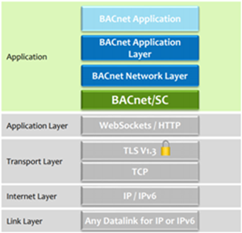

BACnet 安全连接技术细节
BACnet/SC 是 BACnet 标准的安全更新。它本质上是 BACnet/IP. 的安全且 IT 友好的替代方案，BACnet/SC 保持了众所周知且理想的 BACnet 功能，即与 BACnet 测试实验室 (BTL) 接受的现有和未来版本 BACnet 协议修订版本的兼容性、系统可扩展性和灵活性，以及不同供应商之间的互操作性。 BACnet-符合 BACnet 测试实验室 (BTL) 列表，并匹配构成 BACnet 系统的组件的协议实现一致性声明 (PICS) 中的 BACnet 互操作性构建块 (BIBBs)。 BACnet/SC 仍然使用 BACnet 标准方法，使用实例编号（BACnet 设备实例编号及其各自的对象实例编号）来识别设备/object。由于无论使用何种 BACnet 数据链路层选项，这些唯一标识符都是一致的，因此当将网络配置从 BACnet/IP 更改为 BACnet/SC 时，或从现有 BACnet 数据链路（例如 BACnet/IP 和BACnet MS/TP 到 BACnet/SC，可节省项目时间，并允许数据链路层选项的灵活性以及通过 BACnet/SC. 平滑过渡到更安全的 OT 网络
属性 | BACnet/IP | BACnet/SC |
|---|---|---|
用于通信的标准化数据模型 |
|
|
具有 BTL 列表并在 PICS 中匹配 BIBBs 的供应商之间的互操作性 |
|
|
与 BACnet 现有和未来版本的兼容性 |
|
|
BACnet routing between different BACnet data links (BACnet/IP, BACnet MS/TP, BACnet/SC) |
|
|
用于设备/object标识的设备实例编号和对象实例编号 |
|
|
系统可扩展性和灵活性 |
|
|

在保留 BACnet 中重要和有价值的内容的同时，还有一些改进。 BACnet/SC 使用行业标准且值得信赖的技术 IT 专业人士熟悉并很好地融入主流 IT 领域。 BACnet/SC 为通信添加了加密层，并要求使用证书进行设备身份验证，这提高了 BACnet 网络安全性，即使在不安全的环境中也是如此。 BACnet/SC 还可以轻松地与 IP 防火墙和网络地址转换 (NAT) 配合使用，并且 IP 网络上不再有大量广播。
BACnet/IP - Unsecured | BACnet/SC - Secure |
|---|---|
无连接 UDP 协议 | 面向连接的TCP协议 |
IP 网络上的广播流量很大 | 单播流量（IP 网络上没有大量广播流量） |
无流量加密 – 所有通信在网络上可见 | 使用相互 TLS v1.3 安全 WebSocket 通信对流量进行端到端加密 |
无需设备身份验证 – 任何设备都可以加入网络 | 所有设备在加入网络之前均使用 X.509v3 证书进行身份验证 |
需要 BACnet 广播管理设备 (BBMD) 才能跨越 IP 子网 | 不需要 BACnet 广播管理设备即可跨越 IP 子网 |
不适用于 IP 防火墙或网络地址转换 (NAT) | 与 IP 防火墙和网络地址转换 (NAT) 配合良好 |
有时需要静态 IP 地址 | 不需要静态 IP 地址 |
BACnet 完全位于应用程序空间中。 BACnet/SC 是一个虚拟数据链路选项，直接添加到应用空间中 BACnet 网络层下的 BACnet 协议栈中。上面的 BACnet 层，特别是 BACnet 应用层和 BACnet 网络层保持不变。这意味着使用 BACnet 的用户端应用程序和工作流程不受影响。此外，可以利用BACnet路由功能来互连不同的BACnet数据链路，例如BACnet/SC、BACnet/IP和BACnet MS/TP，以形成BACnet互联网络。发生的变化是需要为设备生成、提供和维护数字证书，以相互验证和处理加密流量，以及所谓的逻辑“中心辐射”关系模型，以分层结构 BACnet/SC 逻辑网络中的设备。这两项更改对于设置项目时的操作工作流程来说都是新的。

- BACnet/SC uses the same Physical Layer as BACnet/IP – Ethernet cabling, making data link layer changes between /IP and /SC purely firmware functions in the devices and a matter of software configuration.
- On the Link Layer, BACnet/SC is agnostic of Internet protocol (IP) version, and it can run over IPv4 and IPv6 (only IPv4 currently supported).
- On the Transport Layer, BACnet/SC no longer uses the connectionless UDP protocol which has been replaced by the industry standard connection-oriented Transmission Control Protocol (TCP). In contrast to UDP, TCP requires an established connection for transmitting data, guarantees delivery of data to the destination, allows for retransmission of lost packets, provides extensive error checking and acknowledgment of data, does not require broadcasting on the network, and improves support of IT-configured firewalls, Network Address Translation (NAT) devices, and other middlebox IT equipment.
- On the Application layer, BACnet/SC uses the WebSocket protocol for communication, making use of the well-known HTTP(S) ports, secured by mutual Transport Layer Security (TLS) v1.3 and X.509v3 certificates. The BACnet standard defines use of the sophisticated TLS v1.3 encryption standard, but other TLS versions, such as v1.2, are allowed for compatibility with lagging IT security appliances and policies.
- Optional Domain Name System (DNS) name resolution allows for dynamic IP addressing and independence from IP network structure.
- BACnet/SC has a high degree of freedom from its underlying IP subnet LANs:
- One BACnet/SC network can comprise several IP subnets
- One IP subnet can comprise several BACnet/SC networks